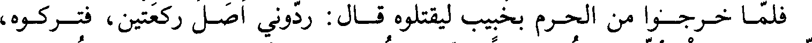
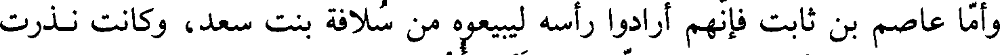
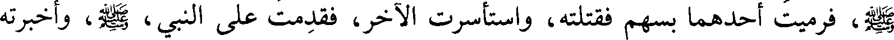
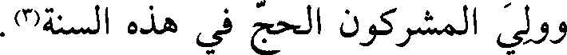
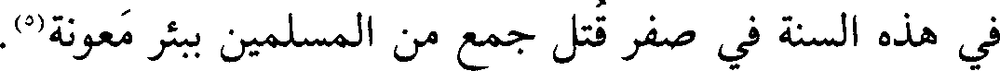
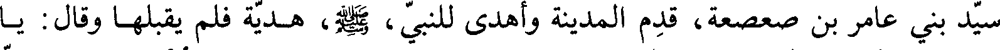

File: 000420.gt.txt (if the image is defective, simply delete all Arabic text and the line will be excluded)

فلما خرجوا من الحرم بخبيب ليقتلوه قال ردوني صلي ركعتين فتركوه
File: 000421.gt.txt (if the image is defective, simply delete all Arabic text and the line will be excluded)
فصلاهما، فجرت سنة لمن قتل صبرا، ثم قال خبيب: لولا أن تقولوا جزع لزدت، وقال
File: 000422.gt.txt (if the image is defective, simply delete all Arabic text and the line will be excluded)

أبياتا، منها:
File: 000423.gt.txt (if the image is defective, simply delete all Arabic text and the line will be excluded)

ولست أبالي حين اقتل مسلما على أي شيء(2) كان في الله مصرعي
File: 000424.gt.txt (if the image is defective, simply delete all Arabic text and the line will be excluded)

وذلك في ذات الإله وإن يشأ يبارك على أوصال شلو ممزع(3)
File: 000425.gt.txt (if the image is defective, simply delete all Arabic text and the line will be excluded)
اللهم أحصهم(4) عددا، واقتلهم بددا(5)! ثم صلبوه(6).
File: 000426.gt.txt (if the image is defective, simply delete all Arabic text and the line will be excluded)

وأما عاصم بن ثابت فإنهم أرادوا رأسه ليبيعوه من سلافة بنت سعد، وكانت نذرت
File: 000427.gt.txt (if the image is defective, simply delete all Arabic text and the line will be excluded)

أن تشرب الخمر في رأس عاصم، لأنه قتل ابنيها بأحد، فجاءت النحل فمنعته، فقالوا:
File: 000428.gt.txt (if the image is defective, simply delete all Arabic text and the line will be excluded)

دعوه حتى يمسى فنأخذه. فبعث الله الوادي فاحتمل عاصما، وكان عاهد الله أن لا يمس
File: 000429.gt.txt (if the image is defective, simply delete all Arabic text and the line will be excluded)
مشركا ولا يمسه مشرك، فمنعه الله في مماته كما منع في حياته(7).
File: 000430.gt.txt (if the image is defective, simply delete all Arabic text and the line will be excluded)

وأما ابن الدثنة فإن صفوان بن أمية بعث به مع غلامه نسطاس إلى التنعيم، ليقتله
File: 000431.gt.txt (if the image is defective, simply delete all Arabic text and the line will be excluded)

بابنيه، فقال نسطاس: أنشدك الله أتحب أن محمدا الآن عندنا مكانك نضرب عنقه وإنك
File: 000432.gt.txt (if the image is defective, simply delete all Arabic text and the line will be excluded)

في أهلك؟ قال: ما احب أن محمدا الآن مكانه الذي هو فيه تصيبه شوكة تؤذيه، وأنا
File: 000433.gt.txt (if the image is defective, simply delete all Arabic text and the line will be excluded)

جالس في أهلي. فقال أبو سفيان: ما رأيت من الناس أحدا يحب أحدا كحب أصحاب
File: 000434.gt.txt (if the image is defective, simply delete all Arabic text and the line will be excluded)
محمد محمدا. ثم قتله نسطاس(8).
File: 000435.gt.txt (if the image is defective, simply delete all Arabic text and the line will be excluded)

قال: وسرت حتى دخلت غارا بضجنان، ومعي قوسي وأسهمي، فبينا أنا فيه إذ
File: 000436.gt.txt (if the image is defective, simply delete all Arabic text and the line will be excluded)

دخل علي رجل من بني الدئل، أعور، طويل، يسوق غنما فقال: من الرجل؟ قلت: من
File: 000437.gt.txt (if the image is defective, simply delete all Arabic text and the line will be excluded)

بني الدئل، فاضطجع معي، ورفع عقيرته يتغنى ويقول:
File: 000438.gt.txt (if the image is defective, simply delete all Arabic text and the line will be excluded)
ثم نام فقتلته ثم سرت، فإذا رجلان بعثتهما قريش يتجسسان أمر، رسول الله،
File: 000439.gt.txt (if the image is defective, simply delete all Arabic text and the line will be excluded)

صلي الله عليه و سلم، فرميت أحدهما فقتلته، واستأسرت الآخر، فقدمت على النبي، صلي الله عليه و سلم، وأخبرته
File: 000440.gt.txt (if the image is defective, simply delete all Arabic text and the line will be excluded)
الخبر، فضحك حتى بدت نواجذه ودعا لي بخير(1).
File: 000441.gt.txt (if the image is defective, simply delete all Arabic text and the line will be excluded)

وفي هذه السنة تزوج رسول الله، صلي الله عليه و سلم، زينب بنت خزيمة أم المساكين من بني
File: 000442.gt.txt (if the image is defective, simply delete all Arabic text and the line will be excluded)

هلال في شهر رمضان، وكانت قبله عند الطفيل بن الحارث فطلقها(2).
File: 000443.gt.txt (if the image is defective, simply delete all Arabic text and the line will be excluded)

وولى المشركون الحج في هذه السنة(3).
File: 000444.gt.txt (if the image is defective, simply delete all Arabic text and the line will be excluded)

في هذه السنة في صفر قتل جمع من المسلمين ببئر معونة(5).
File: 000445.gt.txt (if the image is defective, simply delete all Arabic text and the line will be excluded)
وكان سبب ذلك أن أبا براء بن عازب بن عامر بن مالك بن جعفر بن ملاعب الأسنة،
File: 000446.gt.txt (if the image is defective, simply delete all Arabic text and the line will be excluded)

سيد بني عامر بن صعصعة، قدم المدينة وأهدى للنبي، صلي الله عليه و سلم، هدية فلم يقبلها وقال: يا
File: 000447.gt.txt (if the image is defective, simply delete all Arabic text and the line will be excluded)
أبا براء لا أقبل هدية مشرك، ثم عرض عليه الإسلام فلم يبعد عنه ولم يسلم، وقال: إن
File: 000448.gt.txt (if the image is defective, simply delete all Arabic text and the line will be excluded)
أمرك هذا حسن، فلو بعثت رجلا من أصحابك إلى أهل نجد يدعوهم إلى أمرك لرجوت
File: 000449.gt.txt (if the image is defective, simply delete all Arabic text and the line will be excluded)

أن يستجيبوا لك. فقال رسول الله، صلي الله عليه و سلم: (أخشى عليهم أهل نجد). فقال أبو براء: أنا
To Save: `Ctrl+s`, make sure to choose `Webpage, complete`!